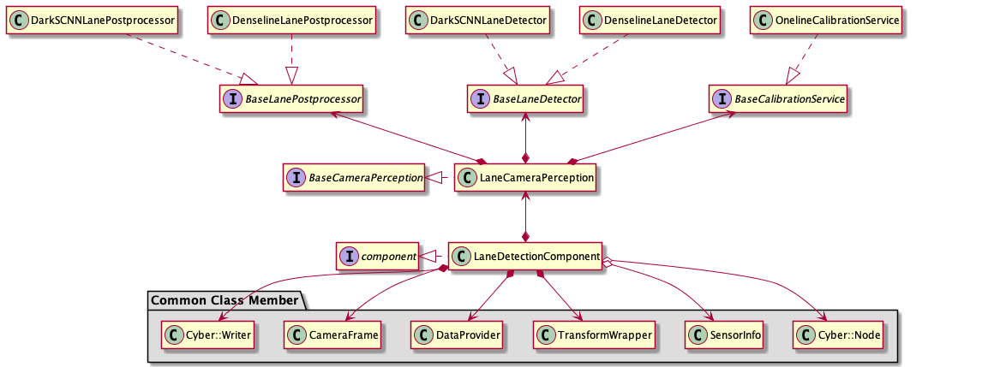

如何添加新的camera检测算法¶
Perception中的camera数据流如下：

本篇文档所介绍的camera检测算法分为三种，分别为针对交通信号灯的检测算法，针对车道线的检测算法和针对障碍物的检测算法。这三种检测算法分别位于图中的Traffic_light, Lane和Obstacle三大Component中。各Component的架构如下：
交通信号灯感知:

车道线感知: 
障碍物感知:

从以上结构中可以清楚地看到,各个component都有自己的抽象类成员 base_XXX_detector。对应的检测算法作为 base_XXX_detector 的不同的派生类，继承各自的基类实现算法的部署。由于各detector基类在结构上非常相似，下面将以 base_obstacle_detector 为例介绍如何基于当前结构添加新的camera障碍物检测算法。新增交通信号灯和车道线检测算法的步骤相同。
Apollo在Obstacle Detection中默认提供了3种camera检测算法–Smoke，Yolo和YoloV4，它们可以被轻松更改或替换为不同的算法。每种算法的输入都是经过预处理的图像信息，输出都是目标级障碍物信息。本篇文档将介绍如何引入新的Camera检测算法，添加新算法的步骤如下：
定义一个继承基类
base_obstacle_detector的类实现新类
NewObstacleDetector为新类
NewObstacleDetector配置param的proto文件更新config文件使新的算法生效
为了更好的理解，下面对每个步骤进行详细的阐述:
定义一个继承基类 base_obstacle_detector 的类¶
所有的camera检测算法都必须继承基类base_obstacle_detector，它定义了一组接口。 以下是检测算法继承基类的示例:
namespace apollo {
namespace perception {
namespace camera {
class NewObstacleDetector : public BaseObstacleDetector {
public:
NewObstacleDetector();
virtual ~NewObstacleDetector() = default;
bool Init(const ObstacleDetectorInitOptions &options =
ObstacleDetectorInitOptions()) override;
bool Detect(const ObstacleDetectorOptions &options,
CameraFrame *frame) override;
std::string Name() const override;
}; // class NewObstacleDetector
} // namespace camera
} // namespace perception
} // namespace apollo
基类 base_obstacle_detector 已定义好各虚函数签名，接口信息如下：
struct ObstacleDetectorInitOptions : public BaseInitOptions {
std::shared_ptr<base::BaseCameraModel> base_camera_model = nullptr;
Eigen::Matrix3f intrinsics;
EIGEN_MAKE_ALIGNED_OPERATOR_NEW
} EIGEN_ALIGN16;
struct ObstacleDetectorOptions {};
struct CameraFrame {
// timestamp
double timestamp = 0.0;
// frame sequence id
int frame_id = 0;
// data provider
DataProvider *data_provider = nullptr;
// calibration service
BaseCalibrationService *calibration_service = nullptr;
// hdmap struct
base::HdmapStructPtr hdmap_struct = nullptr;
// tracker proposed objects
std::vector<base::ObjectPtr> proposed_objects;
// segmented objects
std::vector<base::ObjectPtr> detected_objects;
// tracked objects
std::vector<base::ObjectPtr> tracked_objects;
// feature of all detected object ( num x dim)
// detect lane mark info
std::vector<base::LaneLine> lane_objects;
std::vector<float> pred_vpt;
std::shared_ptr<base::Blob<float>> track_feature_blob = nullptr;
std::shared_ptr<base::Blob<float>> lane_detected_blob = nullptr;
// detected traffic lights
std::vector<base::TrafficLightPtr> traffic_lights;
// camera intrinsics
Eigen::Matrix3f camera_k_matrix = Eigen::Matrix3f::Identity();
// narrow to obstacle projected_matrix
Eigen::Matrix3d project_matrix = Eigen::Matrix3d::Identity();
// camera to world pose
Eigen::Affine3d camera2world_pose = Eigen::Affine3d::Identity();
EIGEN_MAKE_ALIGNED_OPERATOR_NEW
} EIGEN_ALIGN16; // struct CameraFrame
实现新类 NewObstacleDetector¶
为了确保新的检测算法能顺利工作，NewObstacleDetector 至少需要重写 base_obstacle_detector 中定义的接口Init(),Detect()和Name()。其中Init()函数负责完成加载配置文件，初始化类成员等工作；而Detect()则负责实现算法的主体流程。一个具体的NewObstacleDetector.cc实现示例如下：
namespace apollo {
namespace perception {
namespace camera {
bool NewObstacleDetector::Init(const ObstacleDetectorInitOptions &options) {
/*
你的算法初始化部分
*/
}
bool NewObstacleDetector::Detect(const ObstacleDetectorOptions &options,
CameraFrame *frame) {
/*
你的算法实现部分
*/
}
std::string NewObstacleDetector::Name() const {
/*
返回你的检测算法名称
*/
}
REGISTER_OBSTACLE_DETECTOR(NewObstacleDetector); //注册新的camera_obstacle_detector
} // namespace camera
} // namespace perception
} // namespace apollo
为新类 NewObstacleDetector 配置param的proto文件¶
按照下面的步骤添加新camera检测算法的参数信息:
根据算法要求为新camera检测算法配置param的
proto文件。当然，如果参数适配，您也可以直接使用现有的proto文件，或者对现有proto文件进行更改。作为示例，可以参考以下位置的smoke的proto定义：modules/perception/camera/lib/obstacle/detector/smoke/proto/smoke.proto。定义完成后在文件头部输入以下内容：syntax = "proto2"; package apollo.perception.camera.NewObstacleDetector; //你的param参数
参考
yolo_obstacle_detector在目录modules/perception/production/data/perception/camera/models/中创建newobstacledetector文件夹，并根据需求创建*.pt文件：注意：此处 "*.pt" 文件应对应步骤1中的proto文件格式.
更新config文件使新的算法生效¶
要使用Apollo系统中的新camera检测算法，需要根据需求依次对以下config文件进行配置:
参考如下内容更新
modules/perception/production/conf/perception/camera/obstacle.pt文件,将之前步骤中新建的*.pt配置到加载路径中:detector_param { plugin_param{ name : "NewObstacleDetector" root_dir : "/apollo/modules/perception/production/data/perception/camera/models/newobstacledetector" config_file : "*.pt" } camera_name : "front_12mm" }
若需要对步骤1中
detector_param的结构更新，或需要新增其他_param，可在modules/perception/camera/app/proto/perception.proto文件中操作:message PluginParam { optional string name = 1; optional string root_dir = 2; optional string config_file = 3; } message DetectorParam { optional PluginParam plugin_param = 1; optional string camera_name = 2; }
若步骤1中不直接使用
obstacle.pt文件，而使用其他新建的*.pt文件，则需要更改modules/perception/production/conf/perception/camera/fusion_camera_detection_component.pb.txt. 其对应的proto文件为modules/perception/onboard/proto/fusion_camera_detection_component.proto：camera_obstacle_perception_conf_dir : "/apollo/modules/perception/production/conf/perception/camera" camera_obstacle_perception_conf_file : "NewObstacleDetector.pt"
在完成以上步骤后，您的新camera检测算法便可在Apollo系统中生效。